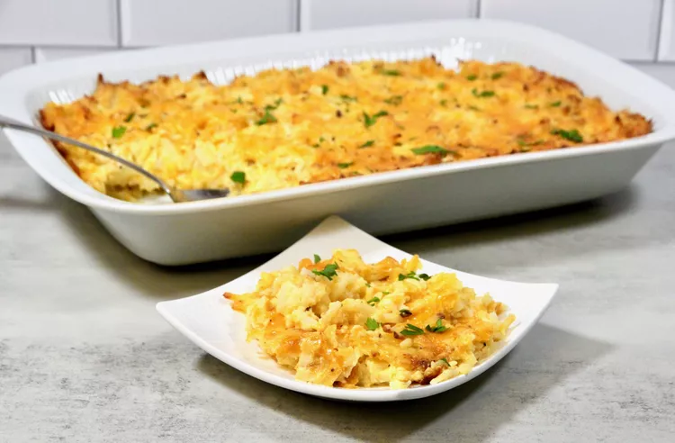

Hash Brown Casserole

Description
Creamy, cheesy, easy, and the star of
the breakfast, brunch, or dinner
table. Comfort food at its finest!
Ingredients
- cooking spray
- 1 (30 ounce) package frozen
shredded hash browns, thawed
- 2 1/2 cups shredded Colby Cheese,
divided
- 1 (10.5 ounce) can of cream of chicken
soup
- 8 ounces sour cream
- 2/3 cup finely chopped onion
- 1/4 cup unsalted butter, melted
- 1 large egg, beaten
- 1/2 teaspoon garlic powder
- 1/2 teaspoon salt
- 1/2 teaspoon freshly ground black
pepper
- chopped parsley for garnish (optional)
Steps to Make the Dish
- Preheat the over to 350 degrees F
(175 degrees C). Spray a 9x13-inch
casserole dish with cooking spray.
- Drain defrosted hash browns well
(I used a salad spinner). Combine
drained hash browns, 2 cups Colby cheese,
cream of chicken soup, sour cream, onion,
butter, egg, garlic powder, salt,
and pepper in a large bowl.
- Spoon the mixture into the casserole
dish, and sprinkle the remaining 1/2
cup of cheese over the top.
- Bake in the preheated oven until cheese
is melted and starts to brown, 45 to 55
minutes.
- Garnish with chopped parsley and serve hot.